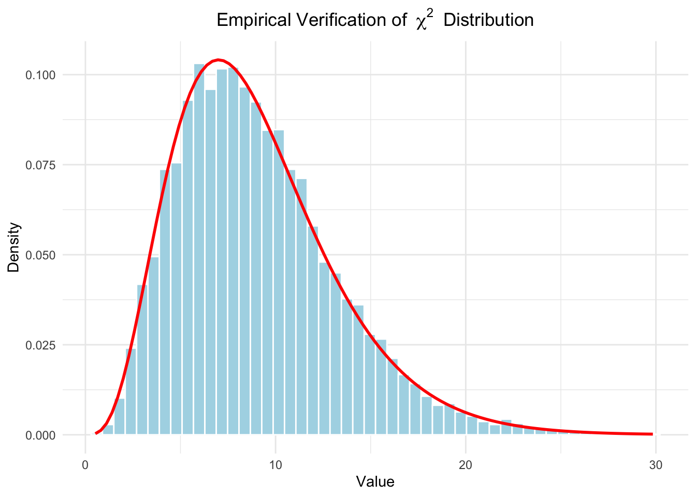
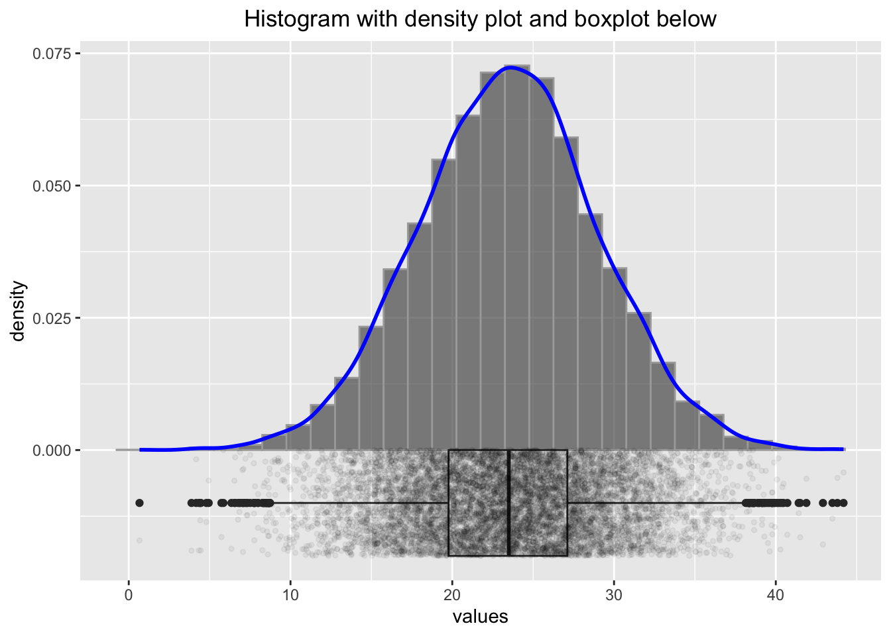
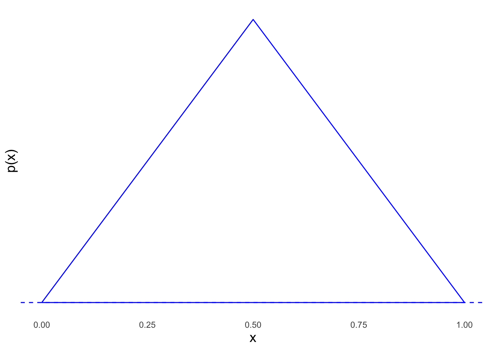
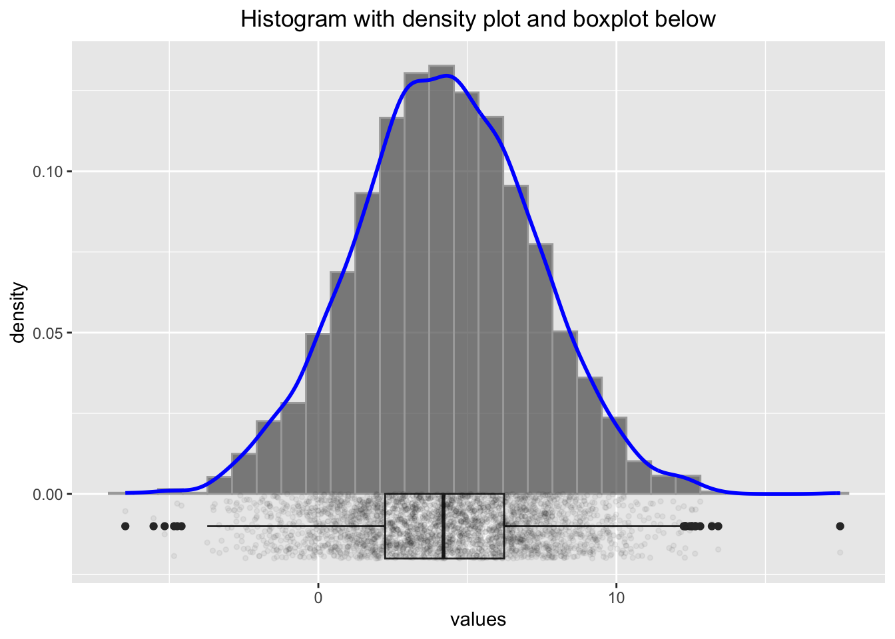
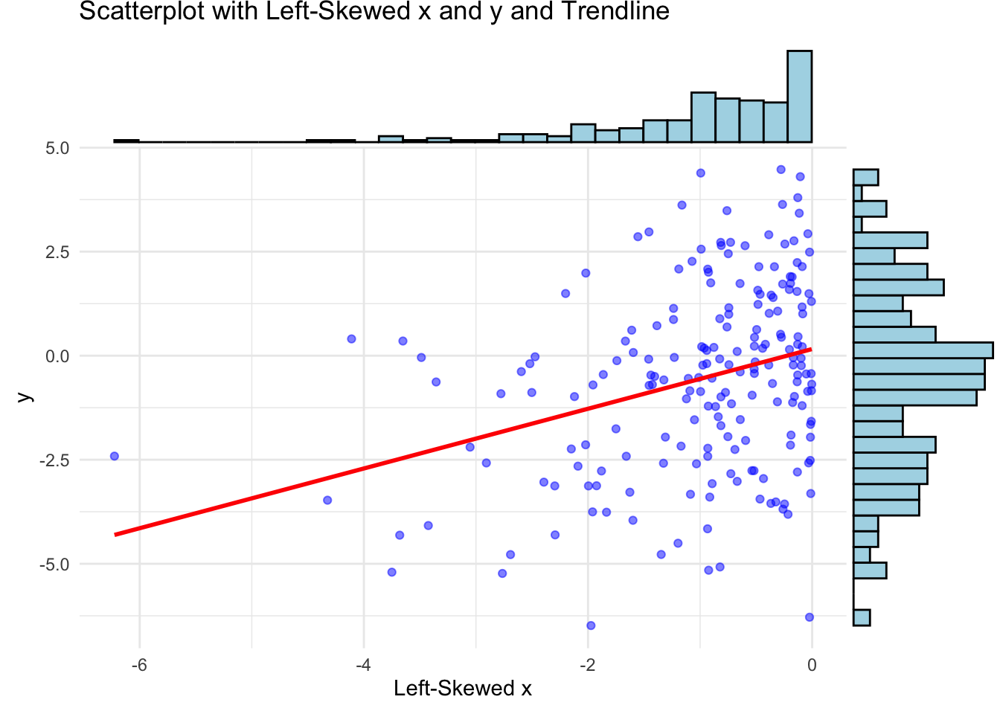

Chapter 3 Descriptive statistics
There are a myriad sources (books, websites, videos) explaining the concepts of descriptive statistics. We do not need to reiterate everything here. You can go through these sources to get started:
The goal is to describe data in a meaningful and honest way. We summarize data to make them more easily digestable for us humans to answer questions like
- Where are the data points located? These questions are answered (at least attempted) by the location measures such as mean, median, and mode.
- How widely are they spread? How much do they vary? These questions are answered by the dispersion measures such as variance, standard deviation (root of the variance), interquantile range or just the range; or even Gini’s mean difference.
- Are there any outliers (rare data points that are far away from the rest (Westfall 2020, 405).) and why? This is a bit more complicated.
3.1 Example: Descriptive statistics in health sciences
These are birds-eye views on the data. Let’s look at a paper which was recently published in the Journal of Physiotherapy in order to get a running start:
(This should be open access.)
The research question was “Do five baseline moderators identify patients with chronic low back pain who respond best to cognitive functional therapy (CFT) when compared with usual care?”.
In Table 2 of the paper, the authors present the baseline characteristics of the patients stratified by the treatment group (ususal care vs CFT). We find absolute numbers, percentages, means, and standard deviations for the continuous variables, medians, and interquartile ranges for the ordinal variables. This should give an idea of the sample. In the population paradigm of statistics, we draw a sample from the population of interest and try to make inferences about the population. We want to learn more about the population respectively that data generating process (DGP) producing the data (Westfall 2020, 6–8). How did the data come about? Note that this sample varies everytime we draw from the population. We can either imagine an infinitely large population or a finite one (e.g. population of Switzerland).
Often, variables in a study are (approximately) normally distributed. We can then efficiently summarize the variable with its mean and standard deviation (location and scale parameter) as is done in the paper for Age in years for instance. We do not want to present p-values in such an overview table since we merely describe data instead of making inferences about the population or the DGP. It is by no means given that age has to be normally distributed in our sample. We could easily have a sample with many young people and few elderly ones. This would result in a (positively) skewed distribution. Having many elderly people and few young ones would result in a negatively skewed distribution of course.
3.2 Univarate vs. bivariate statisics
One can distinguish between univariate and bivariate statistics. In univariate statistics, we look at one variable at a time, for instance Age in the example above, where we could draw a boxplot or a histogram. Table 2 in the paper is a good example of univariate statistics. We are not so much interested in the relationship between variables.
In bivariate statistics, we look at two variables simultaneously. An example could a scatter plot of Age and Cognitive flexibility, where we would possible find a falling relationship.
Multivariate statistics is the next step, where we look at more than two variables at the same time.
3.3 The histogram
One way to visualize the distribution of a continuous variable is the histogram. This video might be helpful to cover the basics. I recommend plotting the histogram with a boxplot below; this helps to visualize the raw data points as well.
library(pacman)
p_load(tidyverse)
set.seed(4433) # to get the same plot every time
# Generate normally distributed sample
x <- rnorm(10000, mean = 23.4, sd = 5.6)
df <- data.frame(values = x)
p2 <- ggplot(df, aes(x = values)) +
geom_histogram(aes(y = after_stat(density)),
bins = 30, alpha = 0.7, color = "darkgrey") +
geom_density(aes(y = after_stat(density)), color = "blue", linewidth = 1) +
geom_boxplot(aes(y = -0.01, x = values),
width = 0.02, position = position_nudge(y = -0.00)) +
geom_point(aes(y = -0.01),
position = position_jitter(width = 0.002, height = 0.01),
size = 1, alpha = 0.05) +
ggtitle("Histogram with density plot and boxplot below") +
theme(plot.title = element_text(hjust = 0.5))
p2
Some researchers would discard the values below 10 and above 40 as outliers, but we know here that the data points are perfectly legitimate. One important thing we should be aware of in connection with small sample sizes ist variability. Let’s create not \(10000\) samples of a normally distributed variable, but only \(25\) samples:
# Generate normally distributed sample
set.seed(1245) # to get the same plot every time
x <- rnorm(25, mean = 23.4, sd = 5.6)
df <- data.frame(values = x)
p2 <- ggplot(df, aes(x = values)) +
geom_histogram(aes(y = after_stat(density)),
bins = 30, alpha = 0.7, color = "darkgrey") +
geom_density(aes(y = after_stat(density)), color = "blue", linewidth = 1) +
geom_boxplot(aes(y = -0.01, x = values), width = 0.02,
position = position_nudge(y = -0.00)) +
geom_point(aes(y = -0.01),
position = position_jitter(width = 0.002, height = 0.01),
size = 1, alpha = 0.05) +
ggtitle("Histogram with density plot and boxplot below") +
theme(plot.title = element_text(hjust = 0.5))
p2
We know (in this case) that these values come from a normal distribution with a mean of \(23.4\) and a standard deviation of \(5.6\). Let’s estimate the parameters (\(\mu\), \(\sigma\)) from the sample and use the often but not recommended Shapiro-wilk test for normality:
## [1] 20.6017## [1] 20.6017## [1] 4.622042## [1] 4.622042##
## Shapiro-Wilk normality test
##
## data: x
## W = 0.95059, p-value = 0.2585Firstly, the histogram looks rather differently when using a different seed. Secondly, we would probability not be able to tell if the data stems from a normal distribution. Thirdly, the sample mean and standard deviation are not all that bad estimators for the true (but unknown) mean and standard deviation. Nicely enough, the Shapiro test would not reject the null hypothesis of normality in this case.
Let’s try the Shapiro test with a t-distribution with 3 degrees of freedom, which is not normal:
set.seed(1245) # to get the same plot every time
x <- rt(25, df = 3) # random numbers from t-distribution
df <- data.frame(values = x)
p2 <- ggplot(df, aes(x = values)) +
geom_histogram(aes(y = after_stat(density)),
bins = 30, alpha = 0.7, color = "darkgrey") +
geom_density(aes(y = after_stat(density)), color = "blue", linewidth = 1) +
geom_boxplot(aes(y = -0.01, x = values), width = 0.02,
position = position_nudge(y = -0.00)) +
geom_point(aes(y = -0.01),
position = position_jitter(width = 0.002, height = 0.01),
size = 1, alpha = 0.05) +
ggtitle("Histogram with density plot and boxplot below") +
theme(plot.title = element_text(hjust = 0.5))
p2
##
## Shapiro-Wilk normality test
##
## data: x
## W = 0.95827, p-value = 0.3811Some researchers would argue, that the distribution is normal (since the p-value is rather large), but we know it is not. We will be cautious with such ugly rule of thumbs.
3.3.1 Example in the wild
We will try to catch a histogram in the wild (= in a research paper): We find one here. Figure 1 shows a histogram often the foot posture index (FPI-6) scores from the participants (3217 healthy children aged 3 to 15). “The FPI score may range from −12 (highly supinated) to +12 (highly pronated)”. There are a few things to note here:
{kind=link}
Acccording to the Methods-section: “Testing for normality using a Kolmogorov-Smirnov test, found non-normal distribution of all data…”. Especially the BMI could be asymmetrically distributed, or also age. Unfortunately, we do not have histograms or boxplots for these variables. Nevertheless, the authors present the mean and standard deviation for these variables which implies (when not reading the methods section) that the data is (at least sufficiently) normally distributed.
Strictly speaking, an FPI score cannot be normally distributed since it takes discrete values which are bounded between -12 and 12 (normal distribution can take values between \(-\infty\) and \(\infty\)). But that should not be a problem with so many levels of an ordered categorical variable. It should be a sufficient approximation.
“The FPI was analysed as continuous data, rather than as z-score data”. z-scores are standardized scores: \[Z = \frac{X - \mu_X}{\sigma_X}\] Doing this for the FPI scores would give (FPI right, see Table 1): \[z_i = \frac{FPI_i - \overline{FPI}}{SD(FPI)} = \frac{FPI_i - 4.20}{3.00}\] \(\overline{FPI}\) ist the arithmetic mean of the FPI scores, \(SD(FPI)\) the standard deviation of the FPI scores. \(\mu_X\) is the expectation of X and \(\sigma_X\) the standard deviation of X. So we measure not in FPI units anymore, but in standard deviations from the mean which makes it easier to compare different variables with each other. A nice property is: If X is normally distributed (\(X \sim N(\mu, \sigma\))), then the z-scores are standard normally distributed (\(Z \sim N(0,1\))). See Exercise 4. Of course both, z-scores as well as FPI scores are considered “continuous” (in this context).
With so many obsvervations (\(n=3217\)), how would a truly normal distribution with the parameters \(FPI \sim N(4.20, 3.00)\) look like? We can simulate this with the following code:
set.seed(8345) # to get the same plot every time
x <- rnorm(3217, mean = 4.20, sd = 3.00)
df <- data.frame(values = x)
p2 <- ggplot(df, aes(x = values)) +
geom_histogram(aes(y = after_stat(density)),
bins = 30, alpha = 0.7, color = "darkgrey") +
geom_density(aes(y = after_stat(density)), color = "blue", linewidth = 1) +
geom_boxplot(aes(y = -0.01, x = values), width = 0.02,
position = position_nudge(y = -0.00)) +
geom_point(aes(y = -0.01),
position = position_jitter(width = 0.002, height = 0.01),
size = 1, alpha = 0.05) +
ggtitle("Histogram with density plot and boxplot below") +
theme(plot.title = element_text(hjust = 0.5))
p2
Comparing these histograms (using different seed-values), we could assume that for truly normally distributed FPI scores, the histogram might look smoother than the one in Figure 1 in the paper. Especially the values around 6 seem to deviate from the normal distribution.
3.4 Correlation
The correlation between two variables is a measure of the strength and direction of the linear relationship between them. It does not (directly) a measure of other kinds of relationships (for instance monotonic or polynomial). See also Anscombe’s quartet.
Correlation is often denoted by the Greek letter
\[\rho = \frac{\text{Cov}(X, Y)}{\sigma_X \sigma_Y}\] for the population parameter (the true but unknown)
where:
\(\text{Cov}(X, Y)\) is the covariance between variables \(X\) and \(Y\),
\(\sigma_X\) and \(\sigma_Y\) are the population standard deviations of \(X\) and \(Y\), respectively.
and
\[r = \frac{\sum (X_i - \bar{X})(Y_i - \bar{Y})}{\sqrt{\sum (X_i - \bar{X})^2 \sum (Y_i - \bar{Y})^2}}\]
for the sample estimate.
Remember: We use \(r\) to estimate \(\rho\) using the sample.
The correlation coefficient can take values between -1 and 1.
A value of 1 indicates a perfect positive linear relationship between the variables.
A value of -1 indicates a perfect negative linear relationship between the variables.
See here and here for a nice illustration. Study this in detail. A correlation of \(\pm 1\) just means that the data points lie on a straight line. It does not say anything about the steepness of the line.
{kind=link}
{kind=link}
You can watch these videos to get a better understanding of the concept:
Correlation is an often (over-)used measure in research. It is important to note that correlation does not imply causation. For instance, chocolate consumption is positively correlated with the number of Nobel laureates in a country. This does - unfortunately - not mean that eating chocolate makes you smarter.
One thing many of us think when they see a high correlation (near 1) is that if we know the value of one variable, we can predict the value of the other variable. This is not necessarily true. This section explains why. Study the visualization here. It depicts the reduction of the prediction interval for Y given X as the correlation increases (assuming that the variables are jointly normally distributed). How much smaller is the interval where my next observation of Y will fall if I know the value of X? As you can see, this curve is relatively flat in the beginning, meaning, on an individual level, the correlation does not tell us much about the value of Y given X. Of course with correlation 1, we can predict the value of Y perfectly, but even with a correlation of 0.5 (which is considered high in many areas), the prediction interval for Y is only 13% smaller.
{kind=link}
One often reads that the two variables used for calculation of a Pearson correlation coefficient should be normally distributed. This is not necessary, at least not for descriptive purposes. The correlation coefficient is a measure of the linear relationship and we can think of an example with skewed data where the correlation coefficient is still meaningful:
# Load required libraries
library(ggplot2)
library(ggExtra)
# Set seed for reproducibility
set.seed(1234)
# Parameters
n <- 200 # Sample size
beta <- 0.7 # Desired beta
# Generate left-skewed variable x (negative exponential distribution)
x <- -rexp(n, rate = 1)
# Generate correlated left-skewed variable y
error <- rnorm(n, mean = 0, sd = 2)
y <- beta * x + error
# Create a data frame
data <- data.frame(x = x, y = y)
# Create scatterplot with marginal histograms and trendline
p <- ggplot(data, aes(x = x, y = y)) +
geom_point(alpha = 0.5, color = "blue") +
geom_smooth(method = "lm", color = "red", se = FALSE) +
labs(title = "Scatterplot with Left-Skewed x and y and Trendline",
x = "Left-Skewed x", y = "y") +
theme_minimal()
# Add marginal histograms using ggExtra
ggExtra::ggMarginal(p, type = "histogram", fill = "lightblue", color = "black")## `geom_smooth()` using formula = 'y ~ x'
## `geom_smooth()` using formula = 'y ~ x'
## `geom_smooth()` using formula = 'y ~ x'
If X and Y are bivariate normally distributed, then one can use the variable \(t = r \sqrt{\frac{n-2}{1-r^2}}\) as test statistic for the null hypothesis (next chapter) \(H_0: \rho = 0\). Note: It is not sufficient for X and Y to be individually normally distributed in order to be jointly normally distributed.
3.4.1 Example in the wild
Let’s again visit the previous paper. In the results, correlations are presented in a dichotomous way with regards to p-values, which should be avoided. We will expand on this in the next chapter. For large sample sizes, even small (true) correlations will be “significant”, especially, if one decides to use an arbitrary threshold for the p-values like \(0.05\). There is not much information in this fact. I would argue that all p-values for such large sample sizes and larger correlations do not carry much information. See also Exercise 5.
That was all nice, what could go wrong?
(The sample) Correlation (coefficient) is based (see the formula above) on the artihmetic mean \(\bar{X}\) (capital X since we are talking about the random variable which is realised when the \(X_i\) have materialized into the \(x_i\)) and sample standard deviation \(\sigma\).
The sample mean is not robust against outliers. A single large value can distort the mean arbitrarily much. Hence, the correlation coefficient is not robust against outliers. Let’s see this in action:
# Load necessary libraries
library(ggplot2)
library(ggpubr)
# Set seed for reproducibility
set.seed(123)
# Parameters
n <- 100 # Sample size
rho <- 0.75 # Desired correlation
# Generate bivariate normal data with specified correlation
x <- rnorm(n)
y <- rho * x + sqrt(1 - rho^2) * rnorm(n)
# Store original data
data_original <- data.frame(x = x, y = y)
# Function to create scatterplot with trend line and correlation
create_plot <- function(data, title) {
ggplot(data, aes(x = x, y = y)) +
geom_point(alpha = 0.6, color = "blue") +
geom_smooth(method = "lm", se = FALSE, color = "red") +
labs(title = title, subtitle = paste("Correlation:",
round(cor(data$x, data$y), 2))) +
theme_minimal() +
theme(plot.title = element_text(hjust = 0.5)) # Center the title
}
# Original scatterplot
p_original <- create_plot(data_original, "Original Data")
# Add outlier in x
data_outlier_x <- data_original
data_outlier_x$x[n] <- max(x) + 5 # Extreme value in x
p_outlier_x <- create_plot(data_outlier_x, "Outlier in X")
# Add outlier in both x and y
data_outlier_xy <- data_original
data_outlier_xy$x[n] <- max(x) + 5 # Extreme value in x
data_outlier_xy$y[n] <- max(y) + 5 # Extreme value in y
p_outlier_xy <- create_plot(data_outlier_xy, "Outlier in Both X and Y")
# Add outlier in y
data_outlier_y <- data_original
data_outlier_y$y[n] <- max(y) + 5 # Extreme value in y
p_outlier_y <- create_plot(data_outlier_y, "Outlier in Y")
# Arrange plots using ggarrange
ggarrange(p_original, p_outlier_x, p_outlier_xy, p_outlier_y,
labels = c("A", "B", "C", "D"),
ncol = 2, nrow = 2)## `geom_smooth()` using formula = 'y ~ x'
## `geom_smooth()` using formula = 'y ~ x'
## `geom_smooth()` using formula = 'y ~ x'
## `geom_smooth()` using formula = 'y ~ x'
A: \(r=0.71\) for the original data.
B: When we add an outlier in x, \(r\) decreases to \(0.44\) and the trendline is notably shifted.
The reason for the smaller correlation is that the outlier is above the mean of the x values and below the mean of the y values and therefore adds negatively to the covariance.
C: When we add an outlier in both \(x\) and \(y\), \(r\) stays relatively stable. The reason is that the outlier is above the mean of the x values and above the mean of the y values, so it adds positively to the covariance. Also, the outlier is in line with the trend of the data. We could ask, what happend in this data point? Was another scale used for instance?
D: When we add an outlier in \(y\), the \(r\) decreases to 0.48. The reason for the smaller correlation is that the outlier is above the mean of the y values and below the mean of the x values and therefore adds negatively to the covariance.
We could also ask why the trend lines (created with simple linear regression) change the way they do. We will come to this later in our courses.
3.5 Exercises
3.5.2 Exercise 2 - Outliers and estimates
Let’s assume we know that the Cognitive flexibility is normally distributed with a mean of 60 and a standard deviation of 7.4 (Table 1): \(CognFlex \sim N(60,7.4)\).
- Draw a sample of 165 persons from this distribution and calculate the mean and standard deviation of the sample. How good is the estimate of the true (and in this case: known) mean and standard deviation?
- Let’s replace some of the data points with outliers. Change the score of 5 persons with to impossible CognFlex score of 100. Calculate the mean and standard deviation of the sample. How do the estimates change?
- When we try to estimate the location of our Cognitive flexibility distribution with the median, how many outliers of what magnitude are necessary to disturb the estimate by 5 points?
3.5.3 Exercise 3 - Recreating data in Table 2
We assume that age in both groups is normally distributed with a mean of 48 (47) years and a standard deviation of 16 (15) years:
\(Age_{UsualCare} \sim Normal(\mu = 48, \sigma = 16)\) and
\(Age_{CFT} \sim Normal(\mu = 47,\sigma = 15)\).
- Under these assumptions, what is the probability, that we would see a person of age 60 or older in a new sample (in either group)?
- What is the probability, that we would see a person of age 18 or younger in a new sample?
- Give a 99% interval for the age in CFT, where we would expect a new person drawn from the same population.
Let’s assume Sex is binomially distributed with a probability of \(p = 0.59\) for both groups.
- What is the probability, that we would see a woman as the next recruited person in the Usual care group?
- What is the probability, that we would see no man in a sample of 10 persons in the CFT group?
- Sometimes you want balanced samples. How many patients would we need to recruit to get at least 45 women with a probability of at least 90%. (We could solve this with simulation.)
3.5.4 Exercise 4 - Z-scores
- Show with a simulation that the z-scores are standard normally distributed if the original variable is normally distributed.
- Try different parameter values for \(\mu\) and \(\sigma\) and plot the histogram of the z-scores.
- Optional: Try to prove this mathematically.
3.5.5 Exercise 5 - Correlation
The following R-code creates correlated samples with a (true) correlation \(\rho\):
set.seed(1234)
n <- 1000
rho <- 0.5
x <- rnorm(n)
y <- rho * x + sqrt(1 - rho^2) * rnorm(n)
cor(x, y)## [1] 0.541743- Try different values for \(\rho\) and \(n\) and plot the scatterplot of \(x\) and \(y\).
- Execute the code above 1000 times and save the correlation coefficient in a vector.
- Calculate the sample quantiles and interquantile range of the simulated correlation coefficients. What do you observe with respect to variability?
- Plot the histogram of the simulated correlation coefficients.
3.6 Solutions
Solutions for this chapter can be found here.